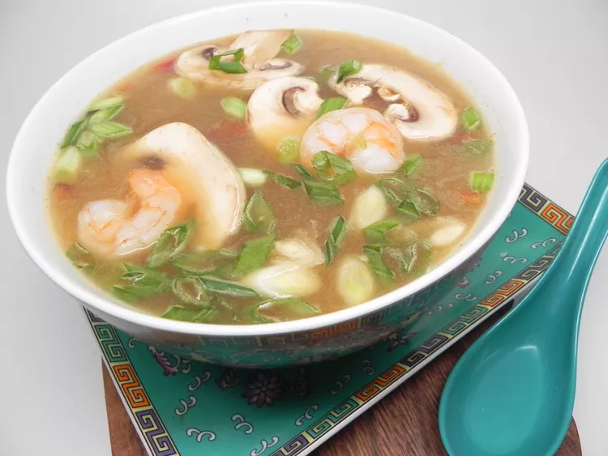

Tom Yum Soup

Description
This homemade hot and sour soup (tom yum) is easier than most recipes you will
find. I have simplified a sometimes complex recipe for those like me who can
have a hard time finding some of the original ingredients. This is my favorite
recipe, better than any tom yum in the many restaurants I have been to.
Ingredients
- 4 cups vegetable broth
- 1 pound raw shrimp, unpeeled and deveined
- 4 limes, juiced with pulp
- 4 Thai chile peppers, quartered (Optional)
- 2 stalks lemongrass, quartered
- 2 tablespoons tom yum paste
- 1 ½ tablespoons fish sauce
- 1 tablespoon white sugar
- 1 tablespoon chile sauce
- 4 (1/4 inch thick) slices fresh ginger root
- 6 baby bella mushrooms, sliced
Steps
-
Combine vegetable broth and shrimp in a pot over medium-high heat. Bring to
a low boil for 10 minutes, then lower heat and simmer for 10 minutes. Remove
shrimp from the broth and remove and discard shells; set shrimp aside.
-
Add lime juice, lime pulp, chile peppers, lemon grass, tom yum paste, fish
sauce, sugar, chile sauce, and ginger slices to the broth; cook for 10
minutes. Remove chile peppers, lemongrass, and ginger slices with a slotted
spoon and discard. Add cooked shrimp and remove from the heat.
- Ladle soup into bowls and top with mushroom slices and green onions.